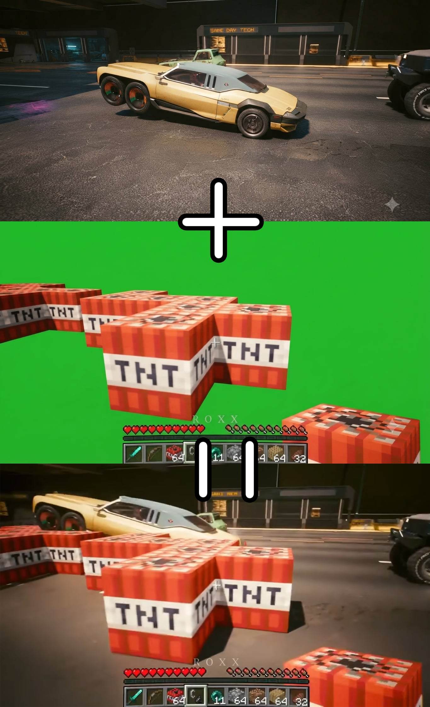

AI가 발전해서 사람들이 이것 저것 여러가지를 시도해보고 있는데 그중 게임판에서 벌어지고 있는 흥미로운 소식들을 정리해봄
플스5 에뮬레이터
현재 개발중인 플스5 에뮬레이터로 KytyPS5, SharpEmu 가 있으며
플스5 독점작인 아스트로봇, 데몬 소울즈 리메이크등을 성공적으로 구동함
덧붙여 기존의 PS4 에뮬레이터인 ShadPS4 에다가 PSVR을 지원을 추가해서 PSVR 독점작이었던 아스트로봇: 레스큐 미션을 메타 퀘스트 3에서 돌아가게 만든 사람도 있음
패스쓰루 모드
대충 두 게임 혹은 그 이상을 스까는 모드라고 보면 됨.

(이해를 돕기위한 예시일 뿐 실제로 이렇게 그린 스크린으로 누끼따서 합성하는건 아님)
이게 어떻게 작동하냐면 한쪽 게임에다가 다른 쪽 게임의 요소를 이식한 그런게 아니라 두 게임을 동시에 실행하고, 모드가 서로 메모리를 주고받으면서 두 게임을 자연스럽게 합성하는거임
단순히 화면만 합성했다 수준이 아니라 AI 모드가 자연스럽게 실제 게임 로직이 작동, 연동되게 해줌. 예를들어 마인크래프트 TNT 폭발 -> 스까진 게임 주변 NPC 에게 폭발 데미지 같은 식.
각종 콘솔 독점작 PC 포팅
참고로 이건 에뮬레이터로 돌리는게 아님. 게임 파일을 AI로 리버스 엔지니어링 한다음 소스코드 수준에서 네이티브로 PC 포팅한거임
PT
블러드본
슈퍼마리오 원더
모두 에뮬레이터 없이 순수 PC로 돌아감
오버워치1 프리서버
AI가 게임 파일 역공학 이런걸 워낙 잘하니까 클라이언트만 남아있으면 섭종한 게임도 이제 씹고뜯고 맛보고 개조할 수 있다함
AI의 덕분에 하루가 멀다하고 이런 것들이 쏟아지는 중임 ㄷㄷ
컴온베이비레이싱이라고 옛날게임온라인있는데 클라이언트만 남은거 양놈들이 ai돌려서 서버만들어서 하고있음 섭종한 옛날게임들 다 부활되겠더라